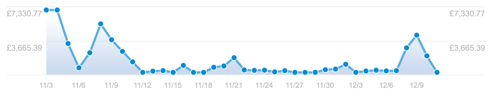

Thank you
11 December, 2014 —
Yesterday, on Human Rights Day, our month-long crowdfunding came to a successful close after exceeding our $100,000 goal by almost $9,000.
Nearly 1,500 of you donated so that we can spend the next year working on creating independent alternatives to Spyware 2.0 with Heartbeat and Waystone.
Thank you.
Here are some stats from the campaign, starting with our donations graph from Stripe. As you can see, the bulk of the donations came in at the beginning and end of the campaign, with a steady trickle throughout.
- 1,498 supporters
- $108,844 raised
- Pre-launched to friends, family and our mailing list on November 3rd, 2014
- In the pre-launch, we raised over 30% of our initial goal.
- Added Bitcoin support on 1 December, with 9 days left in the campaign.
- Received 110 bitcoin payments, totalling $3,650.
- Largest single donation, for $10,000, was from our friends at Open-Xchange.
- In addition to the web site, we received $1,304 in bank transfers as well as an honest-to-goodness paper cheque for £100 :)
Thanks to the crowdfunding, we’ve already hired a new full-time developer, George MacRorie.
I personally have a gruelling three weeks ahead of me as I work on coding the initial OS X native UI and the Node.js core of Heartbeat and Waystone. George will be working alongside me on Pulse, the low-level distributed synchronisation at the heart of the Indienet.
Come January, we’ll be taking the first baby steps towards building the Indienet with the Ind.ie pre-alpha.
It’s not too late to donate
Although our initial crowdfunding campaign is over, we are keeping donations open on our Fund page.
Ind.ie is an ongoing initiative and your donations, in addition to the funds I’m personally investing from my professional speaking engagements, will keep us going until we have revenue from product sales.
At Ind.ie, in addition to working on independent alternatives, we also actively engage with policymakers, politicians, educators, and the public to advocate independent technology and raise awareness of the dangers of the business of spyware. As part of this effort, Laura and I are off to Amsterdam next week where I will be giving the keynote at The Big Brother Awards.
If you want to help give us a bigger push for next year, you still can.
And here’s a huge thank you, again, to those of you who have made our crowdfunding campaign such a success.
Here’s to taking the first steps towards independent and freedom in 2015.
Love,
Aral